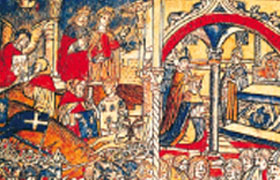

Lezione 5  Invasioni barbariche
Invasioni barbariche

«[Ogni Unno] stando a cavallo notte e giorno […] in mezzo a questa gente acquista e vende, mangia e beve e, appoggiato sul corto collo del cavallo, si addormenta così profondamente da vedere ogni varietà di sogni. E nelle assemblee in cui deliberano su argomenti importanti, tutti in questo medesimo atteggiamento deliberano degli interessi comuni […]. Non sono mai protetti da alcun edificio, li evitano come tombe separate dalla vita di ogni giorno. Neppure un tugurio con il tetto di paglia si può trovare presso di loro, ma vagano attraverso montagne e selve, abituati sin dalla nascita a sopportare geli, fame e sete. Quando sono lontani dalle loro sedi, non entrano nelle case a meno che non siano costretti da estrema necessità, né ritengono di essere al sicuro trovandosi sotto un tetto. […] Potrebbero poi essere considerati senza alcuna difficoltà i più terribili tra tutti i guerrieri poiché combattono a distanza con giavellotti forniti, invece che d’una punta di ferro, di ossa aguzze che sono attaccate con arte meravigliosa, e, dopo aver percorso rapidamente la distanza che li separa dagli avversari, lottano a corpo a corpo con la spada senza alcun riguardo per la propria vita. Mentre i nemici fanno attenzione ai colpi di spada, quelli scagliano su di loro lacci in modo che, legate le membra degli avversari, tolgono loro la possibilità di cavalcare o di camminare».
(Ammiano Marcellino, Le storie, Utet, Torino, 1965)